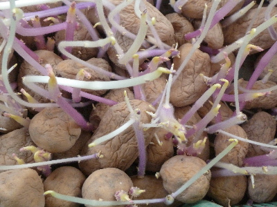
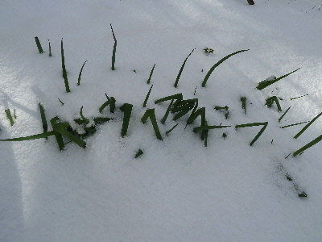
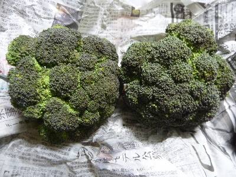
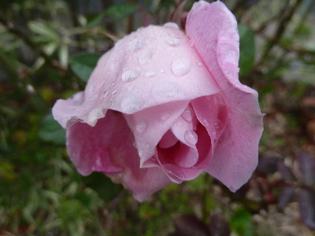

遊びで植物を育てよう
2017/01/15
ジャガイモの芽が伸びていました。
しばらくジャガイモを見ていなかったら、芽が伸びていました。

近頃は冬野菜の収獲が多いので、保存が効くジャガイモは気にしていませんでした。
定期的に見て食べないといけませんね。
【1月TOP】 【日記TOP】 【園芸TOP】
2017/01/15
雪が降ったので、作業はお休みです。
雪が降ったので、作物が埋まってしまいました。

寒いので、今日は外仕事はお休みです。
【1月TOP】 【日記TOP】 【園芸TOP】
2017/01/08
ブロッコリーの季節が始まりました。
採れ始めの頃はブロッコリーが大きくていいな。
収獲するのが楽ちんです。

脇芽から出るようになるとドンドン小さくなっていきます。
【1月TOP】 【日記TOP】 【園芸TOP】
2017/01/08
薔薇は見栄えがいいですね。
四季咲きの薔薇がちょうどいい色合いでした。

この薔薇は枝を伸ばしっぱなしにしてたので、花が高い位置で咲いています。
ちゃんと剪定して育てないといけませんね。
【1月TOP】 【日記TOP】 【園芸TOP】
過去の日記
【2016年1月の日記】
【2015年1月の日記】
【2014年1月の日記】
【2013年1月の日記】
【1月TOP】
【日記TOP】
【園芸TOP】
畑仕事じゃないよ。
【おいしいものを食べよう。】【しっかり寝よう。】
【ソロ活をしよう!】【季節感のあることをしよう。】【動画視聴はほどほどに。】【当サイトの全てのコンテンツは無断転載禁止です。】